01 / INTENT
Six seconds contain a task.
They do not contain a simulator.
The input is ordinary: an egocentric clip of two hands cleaning a tabletop. One hand holds a dustpan. The other moves a brush across small colored blocks, gathering them into the pan. The useful structure is relational: a brush behind the objects, an opening in front of them, a support surface below them, and two tools whose motions must agree.
We asked Astra, a coding and reasoning agent, to carry that structure across several representations. It had to inspect the video, build a scene, place a commercial robot, write a controller, interrogate failures, and produce data that a visual policy could learn from. Each transition created an artifact that could be inspected independently. A plausible render was one artifact; an executable contact model was another.
This is the sense in which we use physical intelligence: organizing perception, spatial reasoning, programs, simulation, and experiments around an action that changes a world. Astra is the agent coordinating that process. The learned controllers appear later in the pipeline. Keeping those roles explicit makes it possible to ask which capability actually produced a result.
02 / SPATIAL INTELLIGENCE
A coordinate system is a commitment.
A single moving RGB camera does not uniquely determine metric geometry, mass, friction, or hidden surfaces. We built a task-oriented reconstruction from visible tool proportions and spatial relationships. Its scale is estimated, not metrically calibrated. The scene specification records these choices in meters, with Z up and the robot facing +X.
The dustpan needs a real cavity, an entrance that blocks can cross, and side walls that retain them. The brush needs a contact surface at the right height. We separated the detailed Blender filaments from the rigid collision proxy used for physics. That separation makes appearance inexpensive to refine while keeping contact geometry inspectable.
For the embodiment, we used the commercial PAL Robotics TIAGo platform, instantiated from the pinned TIAGo++ MuJoCo Menagerie model. The original arm joints, parallel grippers, meshes, and actuator limits remain. The wheeled base is fixed in place; the task begins with both tools already held through rigid attachments. This experiment studies coordinated tool use after grasping.
Orbit, pan, zoom, and scrub a recorded generated rollout in its warehouse presentation. The editable warehouse scene contains this motion; the original reference scene remains available separately. Warehouse geometry adds visual context. Training and inference continue to use their original, frozen scenes.
Geometry transfer has its own measurable contract. For the original reference scene, we checked corresponding objects before and after the browser export: the maximum world-matrix discrepancy was 5.96 × 10−7. Keeping even constant animation channels mattered, because exporter simplification could otherwise erase small motions. The reference transfer audit travels with that scene. The warehouse copy has a separate trajectory-to-Blender pose audit: 1,272 comparisons between recorded states and Blender transforms across eight cases, with a maximum discrepancy of 5.36 × 10−7.
03 / CODE AS POLICY
A program makes a physical hypothesis.
The scene tells us where the tools and blocks are. The next question is what to command. Astra encoded the visible task as a sequence: keep the pan at the receiving edge of the block group, push the brush through the group, retract the brush, then raise the pan. This teacher is an executable geometric hypothesis. Its success depends on whether the robot can reach those tool poses and whether contact carries the blocks across the lip.
Plan the path first. Check collection during execution.
The data-generation implementation has two clocks: a planned phase and elapsed physical time. Before the rollout, plan_variant samples tool_path every 50 ms and solves both arms with ArmKinematics.solve. Each seven-joint solution seeds the next one, encouraging continuity. The solver balances tool-position error, orientation error, and a small departure from the preceding joint solution. It records the remaining IK error for the later audit.
The nominal path holds for 0.6 s, sweeps until 4.2 s, begins brush retraction at 4.4 s, finishes it at 5.2 s, then raises the pan from 5.4 to 6.6 s. Augmentation changes these durations and displacements. Translation uses cubic smoothstep, u²(3 − 2u); lateral bends use 16u²(1 − u)², which returns to zero at both ends. The pan stays near the support surface while the brush pushes, then rises only after the collection phase.
targets, initial = plan_variant(model, variant) # tool paths + two-arm IK
world = JointTargetEnv(model, initial)
i, stable, waits = 0, 0, 0
gate = ceil(sweep_end / 0.05)
while i < len(targets) - 1:
observation = world.state() # positions + velocities, before action
action = float32(targets[i, arm_actuators])
save_observation_and_action(observation, action)
world.step(action, record=record_physical_state_and_contacts)
record_control_frame() # scene transforms at 20 Hz
collected = count_blocks_in_pan(world)
stable = stable + 1 if collected == 6 else 0
if i == gate and stable < 3:
waits += 1 # repeat this target, pause phase clock
if waits == 12:
break # save this timeout as a failed attempt
else:
i += 1
save_trajectory_and_audit()The recording callback saves applied controls, physical states, and contacts after every 2 ms physics step. Separate scene frames are saved at the 20 Hz control rate for later Blender rendering. This retains the contact history needed to audit and replay the motion.
During execution, rollout_variant reads the current joints before applying each target and reads the block count after stepping physics. At the sweep-end gate, it requires three consecutive control ticks with all six blocks in the pan. Otherwise it repeats the gate target while physical time continues; twelve unsuccessful gate checks terminate the attempt. The geometric path and IK targets remain precomputed. This limited feedback changes when the program advances, without inventing a new path around a misplaced block.
Within each 50 ms control interval, JointTargetEnv.step calls step_control twenty-five times. That control layer applies the nominal joint target plus the current bias-force compensation before each MuJoCo step. The learned action label is the nominal fourteen-joint target; the saved actuator trace also contains the compensation actually applied. Once initialized, the six free blocks move through simulated forces and contact. No teacher instruction assigns their future poses.
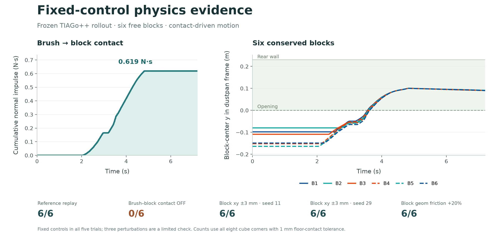
We tested that last link directly on the frozen reference run. Replaying identical controls with brush–block contact disabled changed collection from six blocks to zero. With contact enabled, the reference collected 6/6 blocks, reached 0.668 mm maximum contact penetration, and had no measured robot self-penetration. Replaying its saved actuator controls reproduced the recorded joint-position trajectory with zero numerical difference in the same environment. This initial reference interpolated targets at every 2 ms step; the later learning-data teacher uses the 20 Hz targets and collection gate described above.
04 / DATA GENERATION
One demonstration is a seed.
The distribution is an algorithm.
Repeating one motion teaches a narrow answer to a narrow world. We instead made the scene and the program functions of continuously sampled parameters. Independent scrambled Sobol streams sample geometry, motion, and visual appearance; the program turns each sample into a coordinated tool-use attempt.
| Factor | Continuous variation | What adapts |
|---|---|---|
| Robot placement | Base x/y ±4 cm; yaw ±8° | Both arms solve IK in the changed frame |
| Table geometry | Surface 0.73 ± 0.035 m | Tools, blocks, and collision surface move together |
| Object group | Center x/y ±5 cm; width/depth ×0.8–1.2 | Pan and sweep origins derive from the group bounds |
| Individual blocks | x/y offsets ±1.5 cm; yaw ±35° | Free-body initial states change |
| Tool trajectories | Task yaw ±8°; smooth lateral offsets up to 8 mm / 6 mm | Brush and pan paths, timing, and lift vary |
| Appearance | Independent 13-dimensional visual stream | Light direction/intensity, table and environment appearance |
The generator uses three independently scrambled Sobol streams: 27 geometry coordinates, 9 motion coordinates, and 13 visual coordinates. Separate seeds come from one recorded SeedSequence; candidate i combines row i from each stream. Sobol supplies a reproducible continuous design over the parameter box. The implementation draws the entire power-of-two pool before executing any candidate, so a failure cannot change which proposal comes next.
Geometry has a dependency order. transform_layout first rescales the six-block group and adds per-block offsets. It moves each tool along the group’s changed lateral center; the pan follows the receiving edge and the brush follows the opposite edge. It then rotates the task group and shifts its center and height. The table surface follows the same height offset. Base x, y, and yaw are sampled separately, so the arms must solve the resulting reach problem. Per-block yaw adds further variation without moving the tools independently of the task.
motion_parameters then measures the pan–brush separation along the sampled sweep direction. Sweep distance is that separation plus 7.5 cm and a sampled ±5 mm adjustment. The motion stream varies brush lateral bend by ±8 mm, pan bends by ±6 mm and ±4 mm, the three moving-stage durations by ±15%, and the nominal 9 cm brush lift and 5 cm pan lift by ±15%. Thus larger pan–brush separations produce a correspondingly longer sweep before these smaller trajectory variations are applied.
geometry, motion, visual = independent_scrambled_sobol(
dimensions=(27, 9, 13), count=512, recorded_seed=seed)
proposals = []
for i in range(512):
spec, yaw = transform_layout(source_spec, geometry[i], scale=1)
path = motion_parameters(motion[i], scale=1, spec=spec, yaw=yaw)
appearance = visual_parameters(visual[i])
proposals.append(variant(spec, sampled_base(geometry[i]), path, appearance))
save_all_proposals(proposals)
accepted = []
for candidate in proposal_order(proposals): # workers may execute concurrently
model = build_variant(candidate)
targets, initial, ik = plan_variant(model, candidate)
initial_checks = initial_geometry(model, initial)
trajectory, metrics = rollout_variant(model, candidate, targets, initial)
replay_error = replay_saved_actuator_controls(trajectory)
checks = audit(initial_checks, ik, metrics, replay_error)
save_attempt(candidate, trajectory, checks) # preserve successes AND failures
if all(checks):
accepted.append(candidate)
training = accepted[:256] # selection happens after the full poolThe pseudocode follows sample_variants, generate_episode, and the generation driver. Initial nonoverlap and table-support checks are recorded before the physical rollout; they do not short-circuit it. Every registered candidate is simulated, replayed, and written to the attempt ledger. Only the final conjunction of twenty checks determines training eligibility. Because the driver consumes results in proposal order, the first-256 rule is independent of worker completion speed.
The visual stream is applied to the same candidate without changing its task geometry: ambient level 0.12–0.35, key-light azimuth 0–360°, elevation 35–75°, intensity 0.45–0.95, table RGB channels 0.15–0.70, floor channels 0.05–0.40, and background channels 0.08–0.43. These appearance parameters later drive Blender’s training images. They broaden what the policy sees while the geometry and motion streams broaden what it must do.
We tested a 64-candidate full-domain development batch before generating the registered training pool. Of those 64 proposals, 56 collected all six blocks, but only 41 passed every physical check. A concrete counterexample collected everything while producing 7.711 mm of pan–block penetration. A binary task label would have admitted that trajectory.
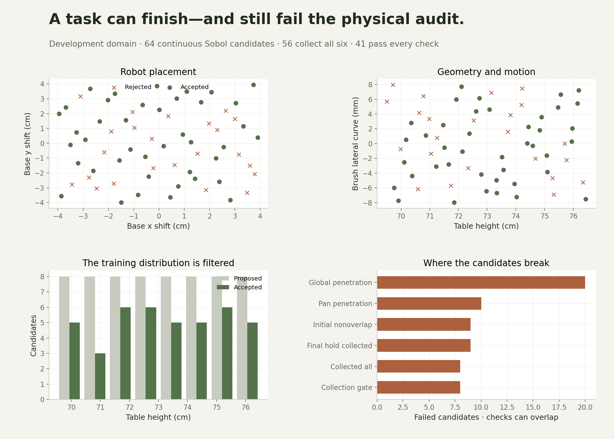
The formal pool then executed all 512 registered proposals. It produced 447 final six-block collections and 303 trajectories passing the complete audit, a 59.18% acceptance rate. We select the first 256 passing candidates in generation order for training. The remaining accepted trajectories and all 209 rejected attempts stay in the record. Across all 512 attempts, actual-control replay error was zero, and all 512 nominal action sequences were distinct.
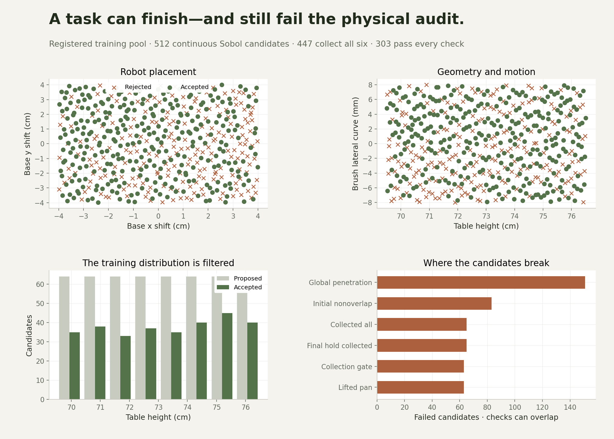
Twenty checks cover initial geometry, sustained collection, the collection gate, lifting, settling, contacts, solver warnings, finite states, task-relevant IK error, tool placement, penetrations, original limits, and control replay. For example, the pan must finish more than 3 cm above the table, block speed must fall below 3 cm/s, and global contact penetration must remain below 1.5 mm. Some are teacher-specific. Later policy evaluation separates final task completion from shared physical validity instead of borrowing the teacher’s success label.
Eight worlds, close enough to inspect.
These workstations replay eight accepted development cases from the generator. The overview shows how robot placement, table height, and appearance vary together. The close view follows workstation 03 so the brush, blocks, and pan entrance remain visible throughout the motion. Each robot follows its own recorded rollout; the array arranges those recordings for inspection.
Hold the moment. Change the world.
Every cut shows a real generated scene at the same elapsed time: 0.75 seconds of simulation. Six chapters revisit the same 32 accepted development samples, ordered by tabletop color, layout position, base yaw, table height, lighting, and tool-path curvature. That fixed moment makes changes in the scene easier to compare. The final chapter also draws the recorded tool trajectories.
The samples vary jointly. Sorting a chapter by one parameter does not hold the others constant, so these sequences show the generator’s range rather than an isolated effect of each factor. Pause the video to inspect a sample, or open the chapter stills below to inspect the scene and its sample identity at full resolution.
Inspect all six chapters at full resolution
{kind=link}
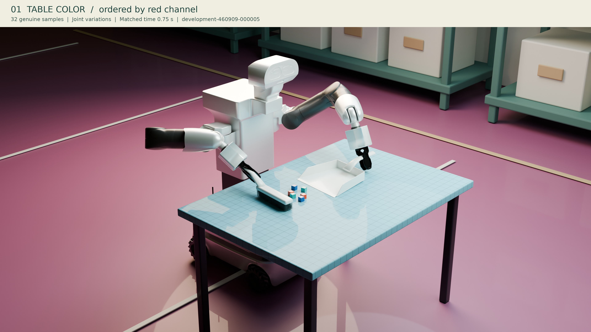
{kind=link}
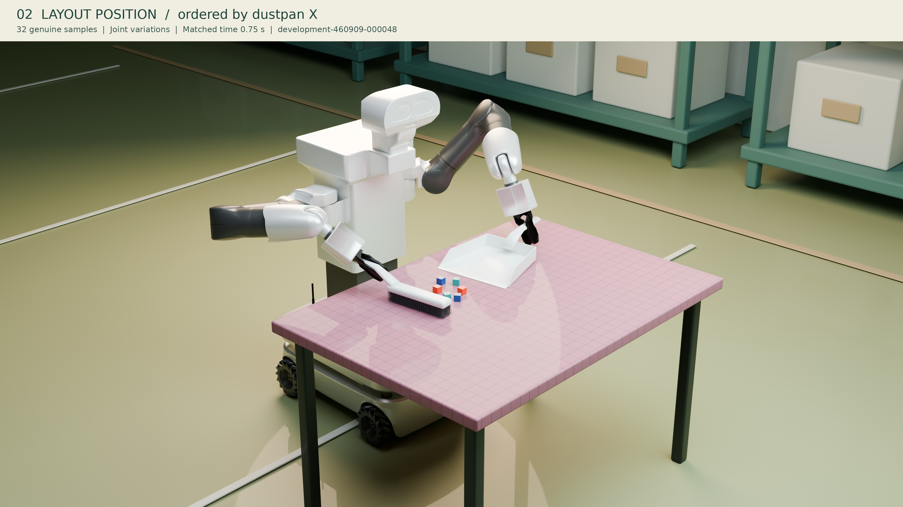
{kind=link}
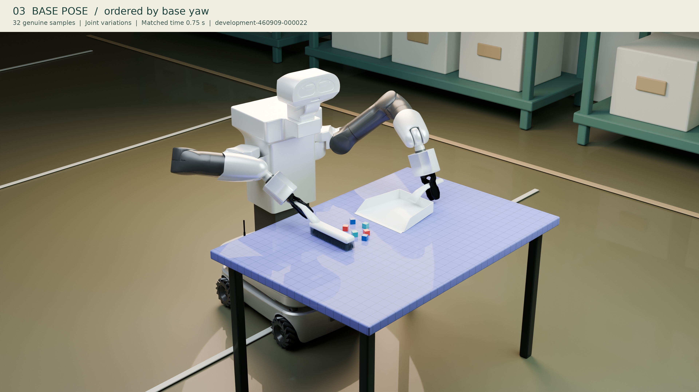
{kind=link}
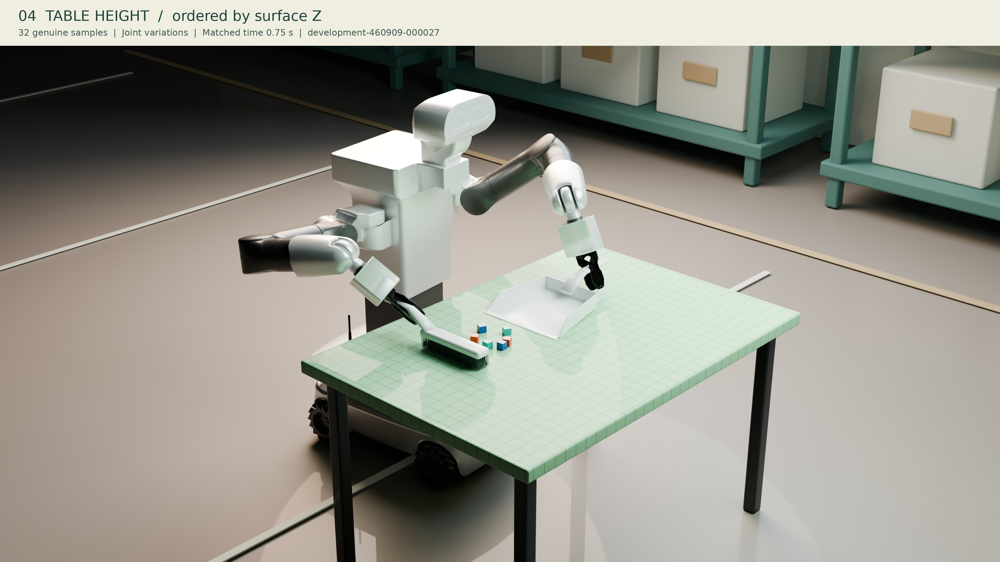
{kind=link}
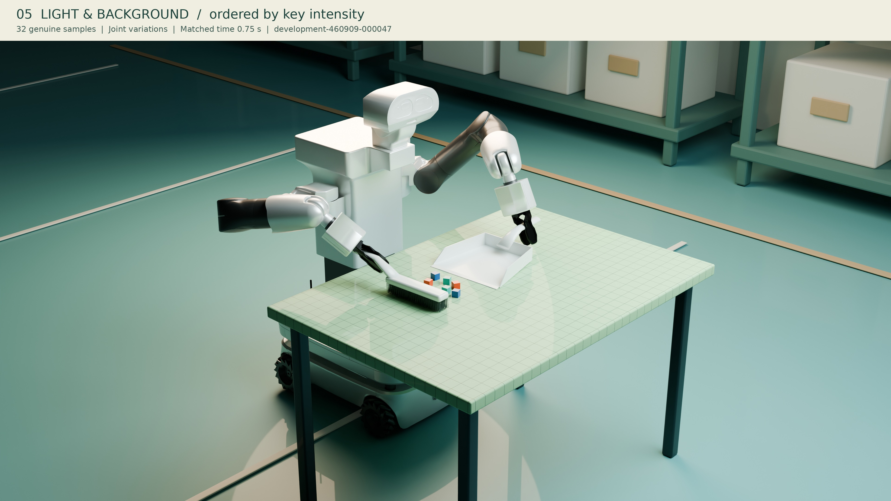
{kind=link}
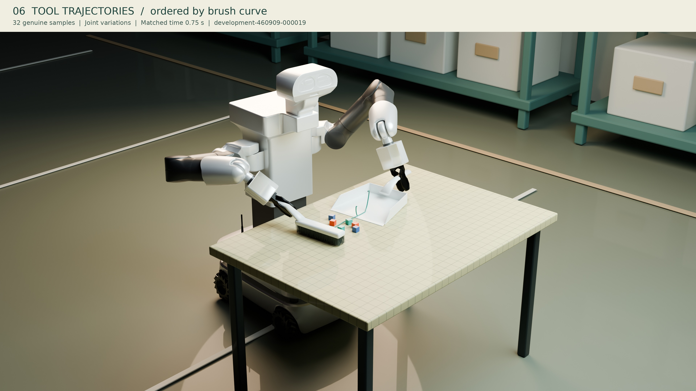
Inspect the worlds, not just the overview.
Eight accepted development candidates share this warehouse display. Select a workstation to examine its table height, robot placement, block arrangement, and recorded sweep up close. Each workstation retains its own motion; the warehouse and display offsets provide a common visual setting.
Open the eight-workstation Blender scene ↓ · Download the animated camera tour ↓. The original thirty-two-workstation overview and accumulating trajectories follow below.
The augmentation visualization uses actual trajectory caches. Thirty-two workstations come from the first thirty-two accepted full-domain development candidates. Each runs its own recorded motion. A second view draws brush and pan origins progressively in a shared world frame, preserving real heights and offsets; the curves remain after they appear. Display offsets in the workstation array are visual layout transforms, recorded separately from physical coordinates.
05 / THE OBSERVATION MODEL
Blender sees. MuJoCo steps.
Rendering is not a final cosmetic pass in the learning experiment. Every training image and every inference image comes from Blender. MuJoCo supplies the current physical state. A persistent Blender process applies the robot and object transforms, positions the two sensor cameras, renders their images, and returns them before the next action is selected.
Advance exactly 25 physical steps, then observe again.
The sensor consumes the current body and geometry transforms over a local binary socket. Its reference Blender scene has frozen animation removed. Returning to an initial physical state returns the same initial images, including after a new episode connection. The physics timestamp accompanies each image pair, so temporal alignment can be checked from saved artifacts.
Both views are 224 × 224 pixels, rendered with Cycles, eight samples, GPU denoising, and a fixed AgX color transform. The top camera sits ahead of the robot’s head; the wrist camera moves with the brush. Camera transforms come from the same physical model used during data collection and deployment. We save PNG output after Blender’s color management rather than reading untransformed linear render pixels.
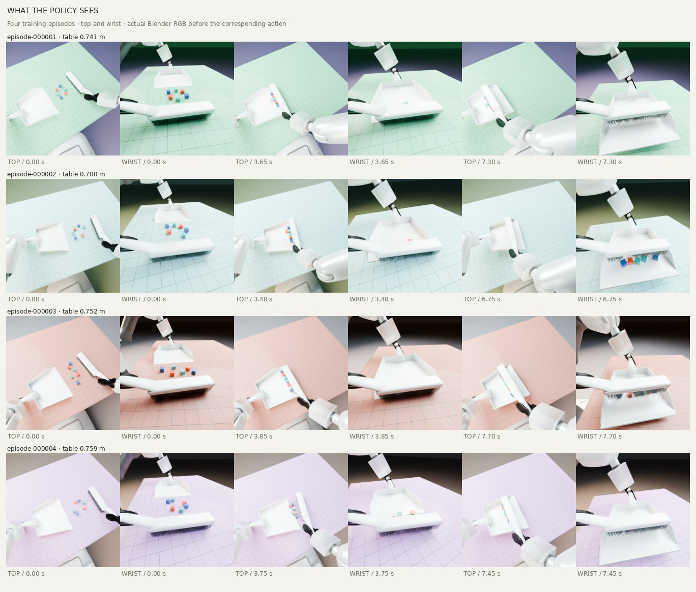
For demonstration collection, the image at time t is paired with the proprioceptive state before action at. In the live-observation evaluation condition, Blender renders the policy’s evolving physical state at every control tick, and the learned controller acts throughout the rollout. The image-intervention condition described below deliberately replaces that input stream with Blender images from a donor trajectory.
| Blender services | Rendered image pairs | Measured aggregate pairs/s |
|---|---|---|
| 1 | 10 | 2.17 |
| 2 | 20 | 4.25 |
| 4 | 40 | 6.74 |
Measured over concurrent request windows, including the first frame. Each pair contains both RGB views. Four services share one A100 80 GB; this is a short scheduling probe, not whole-dataset throughput. Full timing and pixel-consistency audit ↗
The renderer is one part of the loop.
A second probe held the total CPU allocation at eight logical cores and exercised the complete path: Blender, Diffusion Policy, MuJoCo, and video output. Every worker started from the same nominal training scene and ran sixty control steps, producing sixty-one pairs of observations including the final state. The checkpoint came from a completed 2,000-update diagnostic; no validation or test scenes were used.
| Allocation | Image pairs | Complete wall time | Aggregate pairs/s |
|---|---|---|---|
| 2 workers × 4 CPU cores | 122 | 47.96 s | 2.54 |
| 4 workers × 2 CPU cores | 244 | 62.76 s | 3.89 |
The four-worker allocation increased aggregate throughput by 53% while each rollout took longer. Sampled GPU memory peaked at 21,504 MiB, including the independent training job sharing that GPU; the probe processes accounted for 15,082 MiB at their sampled peak. Process and thread affinity checks confirmed that Blender, policy inference, and FFmpeg stayed within the assigned CPU cores. These short, contended measurements help choose a scheduling strategy. They do not establish idle-machine performance or an eight-GPU scaling result. Complete measurements and source hashes ↗
Why a persistent renderer matters
Starting Blender and rebuilding the scene for every image would put process startup and asset import into every control step. The persistent service keeps geometry and rendering state resident. A targeted denoiser comparison found approximately 0.47 seconds per two-camera image pair with GPU denoising, versus 1.42 seconds with the default CPU denoising path in that probe. End-to-end jobs also include pose updates, transport, inference, and physics.
The experiment’s 20 Hz control frequency describes simulated time. Rendering pauses physical advancement; these runs do not claim real-time wall-clock control. Sensor audits record both physics time and render latency.
A denoising flag was slowing the presentation export.
Cycles was already rendering on GPU 0, but the presentation export still ran Open Image Denoise (OIDN) on the CPU. The learning renderer already used GPU OIDN; this mismatch belonged to the presentation export configuration. We changed only the denoising-device flag and rerendered frame 90 of a completed training-scene diagnostic from three cameras. Both runs kept GPU 0 and two logical CPU cores, Cycles at 48 samples, 1280 × 720 output, and the same materials, lighting, and bounce settings.
| View | CPU OIDN (s) | GPU OIDN (s) |
|---|---|---|
| Global | 10.46 | 1.56 |
| Ego | 10.27 | 1.25 |
| Gripper | 10.34 | 1.31 |
Across these three images, Blender’s reported render-and-save time fell from 31.07 to 4.12 seconds, a 7.54× ratio. Pixel comparisons gave SSIM ≥ 0.999335 and a maximum absolute difference of one level in 8-bit RGB. This is a single-frame, three-camera measurement of presentation output. It does not establish a speedup for a complete video or formal evaluation. The measurements and image hashes accompany the comparison.
06 / IMITATION LEARNING
Can a visual policy inherit the program?
The teacher has explicit geometric structure and access to task progress. The student receives two RGB images and twenty-eight proprioceptive values: fourteen actual arm positions followed by fourteen velocities. It predicts fourteen absolute nominal arm-joint targets. It receives no object poses, layout identifier, phase, seed, elapsed-time feature, or teacher action.
We use the official LeRobot implementations of Action Chunking with Transformers and Diffusion Policy, pinned to LeRobot 0.6.1. Both use randomly initialized ResNet18 visual backbones and normalization estimated from their training data. They learn visual features from the generated demonstrations.
| ACT | Diffusion Policy | |
|---|---|---|
| Observation history | Current observation | Two observations |
| Predicted horizon | 16 actions | 16 actions |
| Saved default execution window | 4 actions | 4 actions |
| Validation candidates | 4 or 16 actions | 4 or 15 actions |
| Model configuration | 256-dimensional transformer; 1024 feedforward | Temporal U-Net widths 128 / 256 / 512 |
| Training mechanism | Official variational objective; KL weight 10 | Official diffusion objective; padded actions masked |
| Inference | Chunk prediction | 10 DDIM denoising steps |
Episodes remain separate when constructing action chunks; padding never crosses an episode boundary. We save and reload the official preprocessing and postprocessing state with the checkpoint. Integration tests exercise optimizer updates, changed weights, action chunk boundaries, normalization, checkpoint reload, and the render–infer–step order.
The registered training budget is 50,000 optimizer updates at batch size 32 for each method, data condition, and seed: 1.6 million sampled examples per run. The nominal condition contains one episode with 144 observation–action pairs. The augmented condition contains 256 episodes and 37,048 pairs. That budget corresponds to roughly 11,111 passes over the nominal frame count and 43.2 passes over the augmented frame count. An example here is an action-chunk training sample, not a new independently generated world.
This comparison measures the practical change from repeatedly learning one demonstrated world to learning a generated family under a fixed update budget. Data volume and diversity change together. It does not isolate the contribution of lighting, geometry, motion variation, or the physical acceptance filter. The independent test domains make some of those sensitivities visible; attributing a gain to one generator component would require a separate ablation.
A decreasing loss can hide a broken input scale.
Observation. The first 2,000-update runs reduced their training losses but failed to clean their own training scenes. Nominal ACT collected zero blocks. Diffusion Policy made brush contact but failed all four checked training scenes. Each method had its own diagnostic dataset and one seed, so the useful comparison was a before/after repair within each method.
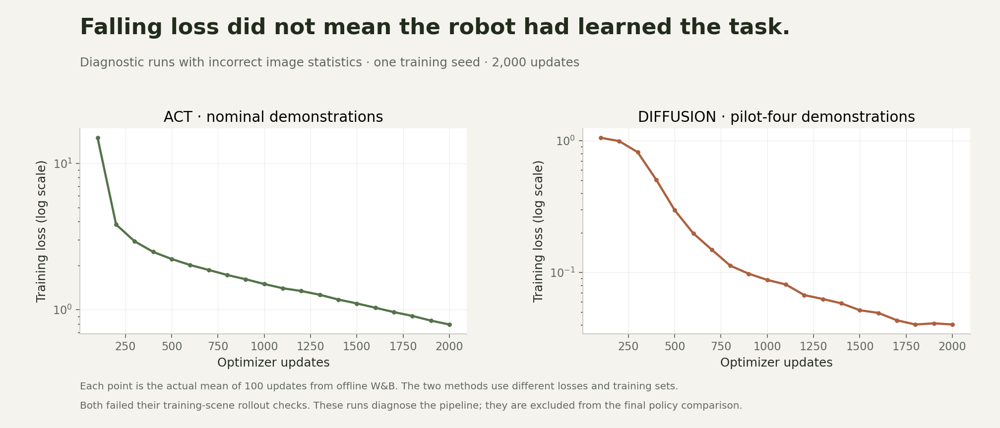
Reasoning. Before adding training, Astra traced an expert observation through the dataset and deployment preprocessor. The inspected inputs matched exactly, ruling out a discrepancy at that boundary. The stored statistics then exposed a more basic contradiction: the top camera’s blue channel had standard deviation zero, although the saved images visibly varied. Training and inference were consistently using the same incorrect scale.
The installed LeRobot statistics code casts sampled images to float32 and forms variance from their first and second moments: E[x²] − E[x]². The nominal sample contains 100 frames, or 5,017,600 pixels per channel. Repeating that reduction reproduced the metadata: the top-blue variance became −801.64453125 in byte-scale squared units and was clipped to zero. Accumulating the same pixels in float64 instead gave normalized RGB standard deviation 0.15748452. This was a reproducible numerical error in the input statistics.
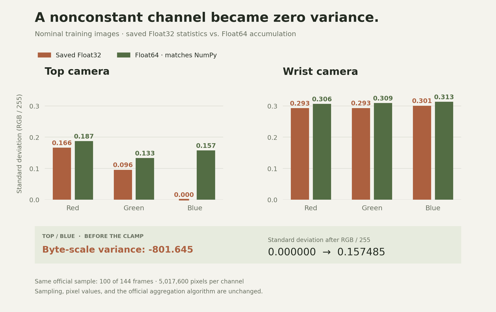
Intervention. Float64RunningQuantileStats.update promotes the accumulator input to float64, then delegates to the existing implementation. Sampling, histogram, quantile, and cross-episode aggregation logic stay in place. The datasets were reconverted with unchanged image, state, and action values; the corrected statistics match a direct NumPy calculation. The four-episode dataset also contained incorrect per-episode zero-variance channels: aggregation had hidden those errors behind positive final standard deviations.
Verification. We repeated each 2,000-update diagnostic with its original examples, seed, and training configuration, changing the statistics correction. ACT now collected all six blocks, versus zero before, but still failed the final pan lift. Diffusion Policy still failed all four scenes, collecting one block in one of them. The numerical repair was verified independently of the policy result; the paired rollouts show that it changed ACT’s behavior substantially while leaving a remaining control problem in both methods.
Predicting a chunk is only half the controller.
Observation. After the statistics repair, a nominal ACT checkpoint at 10,000 updates still collected zero blocks on the training scene, despite its lower loss. Its four-action execution window advances only 0.20 s before asking for another sixteen-action prediction. The prediction’s remaining twelve actions are discarded. A network can therefore predict useful later motion that its deployed controller never reaches.
Reasoning. The demonstration begins with a hold. Comparing 0.45 s with 0.65 s in the nominal demonstration, the audited joint and block positions match, and the two RGB views differ by at most one 8-bit intensity level per channel. Yet the future chunks attached to those nearly identical inputs differ as the sweep approaches. The current-observation ACT interface has no elapsed-time or phase input. One plausible explanation is that repeated early replanning returns to a hold-like prefix, while a longer execution window carries the robot into the moving part of the chunk. The hold measurements establish the ambiguity; they do not reveal the network’s internal decision.
Intervention. We kept the checkpoint weights, initial scene, and sampling seed fixed and changed only the executed prefix from four actions to sixteen. The sixteen-step rollout then collected all six blocks. This is an execution experiment with one network, whereas the statistics comparison above retrained paired networks.
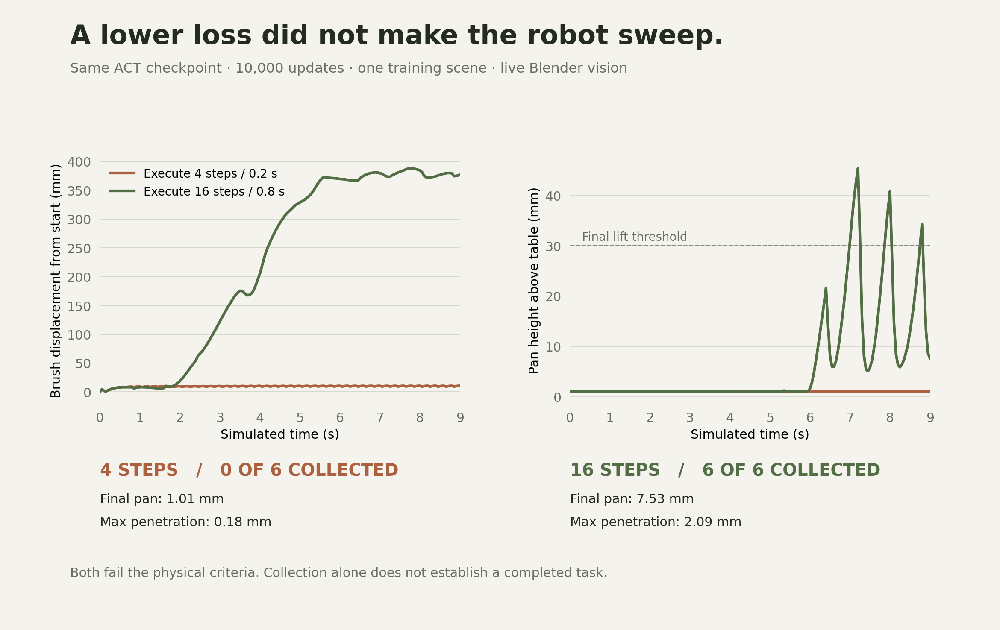
Verification. Recorded physical states show the longer-window rollout leaving the starting region and completing the sweep. They also show oscillation during lifting: the pan finished only 7.53 mm above the table and maximum penetration reached 2.09 mm. Both windows failed the physical criteria. The established result is a change from zero to six collected blocks under a single deployment change; attributing that sensitivity specifically to the initial hold remains a mechanism hypothesis.
Twelve trained policies. One evaluation protocol.
All twelve registered runs reached 50,000 optimizer updates: ACT and Diffusion Policy, nominal and augmented data, and three training seeds. The record contains 6,000 actual logged points, with 500 per run. Each loss point is the official average over the preceding 100 updates. We retain those block averages without additional smoothing. The registered checkpoint is fixed at 50,000 updates; the curves do not select an earlier checkpoint.
{kind=link}
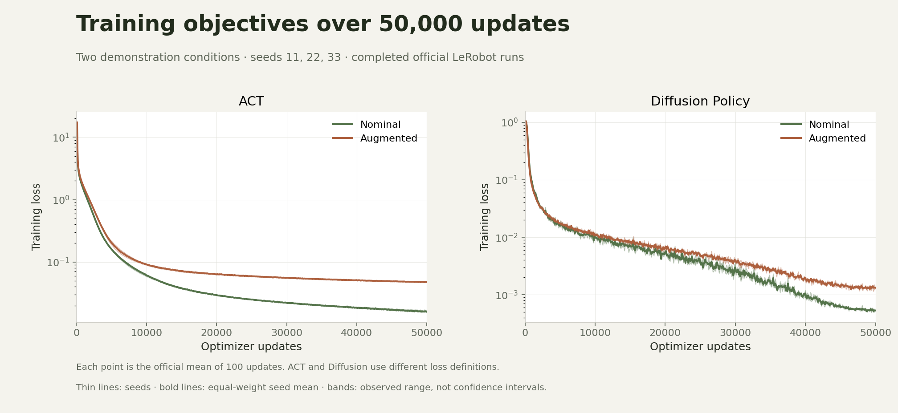
{kind=link}
The two panels answer different optimization questions. ACT minimizes action L1 reconstruction error plus its variational KL term, weighted by 10 here. Diffusion Policy minimizes noise-prediction mean squared error, with padded actions masked. Their loss magnitudes therefore use independent axes. ACT also standardizes actions by training mean and standard deviation, while Diffusion uses training minima and maxima.
| Method · training data | Final block loss | Run elapsed hours |
|---|---|---|
| ACT · nominal | 0.01591 [0.01553–0.01647] | 1.87 [1.86–1.88] |
| ACT · augmented | 0.04761 [0.04689–0.04805] | 1.58 [1.57–1.59] |
| Diffusion · nominal | 0.0005318 [0.0005263–0.0005364] | 3.05 [2.95–3.15] |
| Diffusion · augmented | 0.0013227 [0.0012946–0.0013393] | 4.51 [4.43–4.58] |
Within each method, the augmented condition finishes with a higher training objective. The nominal condition repeatedly fits the same demonstration; the augmented condition fits a generated family, with its own training-data normalization statistics. These are different empirical distributions and different coordinate scales for the targets. Their losses cannot rank generalization. That requires both conditions to act on the same unseen scenes. The earlier 2,000- and 10,000-update diagnostics remain useful precisely because they showed that a small training objective can coexist with unsuccessful physical control.
{kind=link}
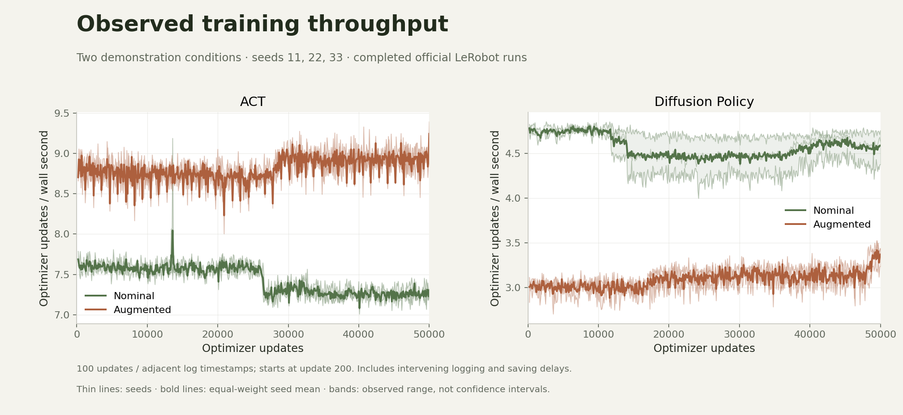
{kind=link}
The attempts consumed 33.05 cumulative run-hours across a 5.55-hour calendar span from the first launch to the last completion. The table includes initialization and final saving. Parallel attempts overlap, so adding their durations does not give elapsed calendar time. These timings describe the actual shared-host experiment; they are not an exclusive-hardware benchmark.
One useful profiling lead survives that distinction. For augmented Diffusion, the logged mean data_s is about 256 ms per update, versus 67 ms for update_s, averaged equally across seeds. More recorded time sits in obtaining the batch than in the optimizer update. This does not isolate decoding, prefetch waiting, or host contention; a follow-up profile should separate them before changing the loader. The next step was the registered closed-loop validation.
A longer execution window won the validation comparison.
The registered validation is complete: 960 rollouts at the fixed 50,000-update checkpoints. ACT executed either four or sixteen actions from each prediction; Diffusion Policy executed four or fifteen. Every candidate was evaluated across nominal and augmented training, with seeds 11, 22, and 33. The comparison therefore changes a deployment setting while retaining the trained checkpoints.
Each table row contains 240 model–scene outcomes: forty shared validation scenes × two training conditions × three seeds. These are repeated evaluations of forty scenes, rather than 240 independent scene samples. Every rollout remains in the denominator. Task success requires all six blocks in the pan; physical success additionally requires the registered contact, penetration, warning, and lifting checks.
| Method · execution window | Physical success | All-six task success |
|---|---|---|
| ACT · 4 actions | 16/240 | 52/240 |
| ACT · 16 actions | 61/240 | 96/240 |
| Diffusion · 4 actions | 42/240 | 69/240 |
| Diffusion · 15 actions | 61/240 | 106/240 |
The selection rule was fixed in advance: maximize physical-success count, then task-success count, with any remaining tie going to four actions. Both methods select their longer candidate on the first criterion. ACT is now fixed at sixteen actions and Diffusion at fifteen, using one common choice across both data conditions and all three seeds. The unaltered selection record includes both candidates’ scores and the hashes of their source results.
More frequent replanning did not win this validation comparison. A four-action window requests a new chunk after 0.20 seconds of simulated control; the selected windows retain 0.80 seconds for ACT and 0.75 seconds for Diffusion. Both Blender cameras still render fresh images on every 20 Hz control tick, and a joint target is applied on every tick. The longer window reduces how often the policy predicts a replacement chunk; it does not lower the observation or control rate.
These counts establish the observed ranking on the selection suite. They leave the mechanism behind that ranking unresolved, and selecting the better candidate makes its validation score optimistic. The separate 3,480-rollout test, including the registered image intervention, keeps these choices frozen. All 3,480 test rollouts are complete, including 1,559 results preserved unchanged across the requested pause. The final results below measure performance beyond the validation scenes.
07 / EVALUATION
The test is what the policy does next.
Teacher failures are useful for constructing a training set; they cannot silently define the evaluation set. We registered independent scene seeds and accept evaluation initializations only on geometric validity. There is no expert-success filter and no IK-success filter. Initial IK residuals are recorded with the scene.
| Domain | Scenes | Question |
|---|---|---|
| Validation | 40 | Which execution window should each method use? |
| In distribution | 100 | Does it act in unseen sampled layouts? |
| Layout shift | 50 | What happens beyond one geometric training bound? |
| Appearance shift | 50 | What survives changed light and surface appearance? |
| Dynamics shift | 50 | What survives heavier blocks and changed friction? |
| Matched-proprioception layouts | 20 | Do different visible block arrangements change behavior? |
The layout domain changes one sampled physical factor beyond the training support: a base shift of 4.5–6 cm, base yaw of 9–12°, or table-height offset of 4–5 cm. Other geometric factors remain in distribution. The dynamics domain raises block mass to 9.6–11.2 g and friction to 0.65–0.85. The appearance domain moves lighting and surface parameters outside their training ranges.
There is a subtle shortcut to test. Standard episode initialization places tools according to the layout, so initial arm angles already reveal some geometric information. Providing RGB does not establish that a policy uses it. The twenty matched-proprioception scenes therefore keep the robot, base, table, tools, and appearance identical while changing block positions and yaw. Robot-only initial state hashes match; the twenty block-state hashes differ.
We also register an image-shuffle diagnostic: the simulator evolves normally and Blender continues rendering it, but the policy receives Blender images from a donor trajectory. Comparing this condition with normal vision probes dependence on the provided image stream. A drop in performance is evidence about this intervention; it is not by itself a complete explanation of the learned representation.
Before running any validation or test policy episode, we registered a two-stage deployment protocol motivated by that training-scene diagnostic. At the fixed 50,000-update checkpoint, validation compares execution windows of 4 versus 16 actions for ACT, and 4 versus 15 for Diffusion Policy. Each candidate is scored on the same forty validation scenes across both training conditions and all three seeds. One window is selected per method by physical-success count, then all-six task-success count, with remaining ties going to four actions. The selected window is shared by both data conditions and every seed of that method, then frozen for the untouched test domains and image intervention. The forty shared scenes generate 240 model-scene outcomes per candidate; these are not 240 independent scenes. Both candidates' validation results remain visible, and selected validation scores are not presented as unbiased generalization estimates. This protocol comprises 960 validation rollouts and 3,480 independent-test and image-intervention rollouts.
We report variability at two levels. For a fixed policy seed, Wilson intervals summarize binary scene outcomes using the 95% binomial formula. Our scene suite comes from a filtered, scrambled Sobol design, so we use those bars descriptively: their nominal coverage has not been calibrated for this sampling design. Across training seeds, plots show an equal-weight mean and the observed range of three trained models. Sampling uncertainty would be better assessed with independent repetitions of the scrambled scene design, following the approach described in the SciPy QMC documentation. Reusing the same scenes across models does not create additional independent scenes.
The generated worlds change what the policies can handle.
All 3,480 registered test rollouts are complete. On the 100 unseen in-distribution scenes, augmented training raises ACT’s mean six-block success from 7.0% to 73.7%, and Diffusion Policy’s from 7.0% to 72.0%. The stricter physical-success rates rise from 3.0% to 47.3% for ACT and from 2.3% to 33.3% for Diffusion. Each number is an equal-weight mean over three training seeds, evaluated on the same scenes.
This is the practical benefit of making the scene executable: the teacher can generate demonstrations for changes in geometry, motion, and appearance that the original recording never showed. Under the registered training budget, those demonstrations produce policies that succeed much more often across the sampled test worlds. The experiment compares the complete augmented training set with the nominal condition; it does not isolate the contribution of each augmentation dimension.
{kind=link}
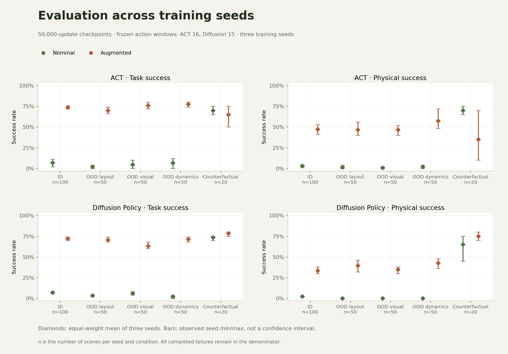
{kind=link}
Collecting everything is only part of the job.
The gap between task and physical success remains large. For augmented ACT on ID scenes, 73.7% collect all six blocks, while 47.3% also pass the physical criteria. For augmented Diffusion, the corresponding rates are 72.0% and 33.3%. A six-block count alone would hide failures of lifting, contact limits, or other checks. The aggregate gap establishes that some task completions are physically invalid; individual metrics are needed to identify which condition failed.
The three shifted domains, with fifty scenes each, tell a consistent generalization story with different physical outcomes. Augmented ACT achieves 70.0–77.3% task success and 46.7–57.3% physical success across layout, appearance, and dynamics shifts. Augmented Diffusion achieves 63.3–71.3% and 34.7–42.7%, respectively. These ranges span domain means. The figure separately shows variation between trained seeds, which remains substantial for physical success.
Inspect every seed and its descriptive scene interval
{kind=link}
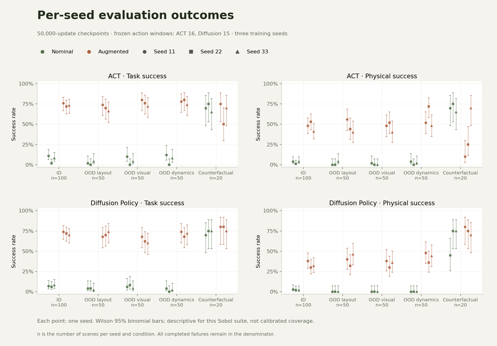
{kind=link}
Does better generalization mean the policy uses its eyes?
That question needs a separate intervention. On twenty scenes with identical initial robot proprioception but different block layouts, we replace live images with Blender images from a donor trajectory. Physics and the evaluated model remain unchanged. The comparison measures what happens when the supplied images cease to describe the current interaction.
Observation. Nominal ACT’s mean task success falls from 70.0% to 5.0%, and physical success from 70.0% to zero. Augmented Diffusion’s task success falls from 78.3% to 68.3%, while physical success falls much more sharply, from 75.0% to 33.3%. Both policies are sensitive to this visual intervention, with different consequences for collection and physical validity.
The other two conditions do not show the same pattern. Augmented ACT changes from 65.0% to 66.7% task success and from 35.0% to 38.3% physical success. Nominal Diffusion increases from 73.3% to 81.7% task success and from 65.0% to 81.7% physical success. These increases are observed outcomes on this fixed intervention suite, not evidence that unrelated images are generally beneficial.
Reasoning. The strong ID gains establish improved performance across the sampled worlds. They do not establish reliable use of current visual feedback in every trained condition. The intervention demonstrates performance sensitivity to the supplied image sequence for nominal ACT and augmented Diffusion on these scenes. Because it replaces the whole sequence, it does not distinguish initial visual conditioning from ongoing feedback. Where performance does not drop, this experiment cannot distinguish visual redundancy, a controller driven mainly by proprioception, or a donor sequence that happens to support a useful action pattern. Resolving those alternatives would require another controlled experiment.
{kind=link}
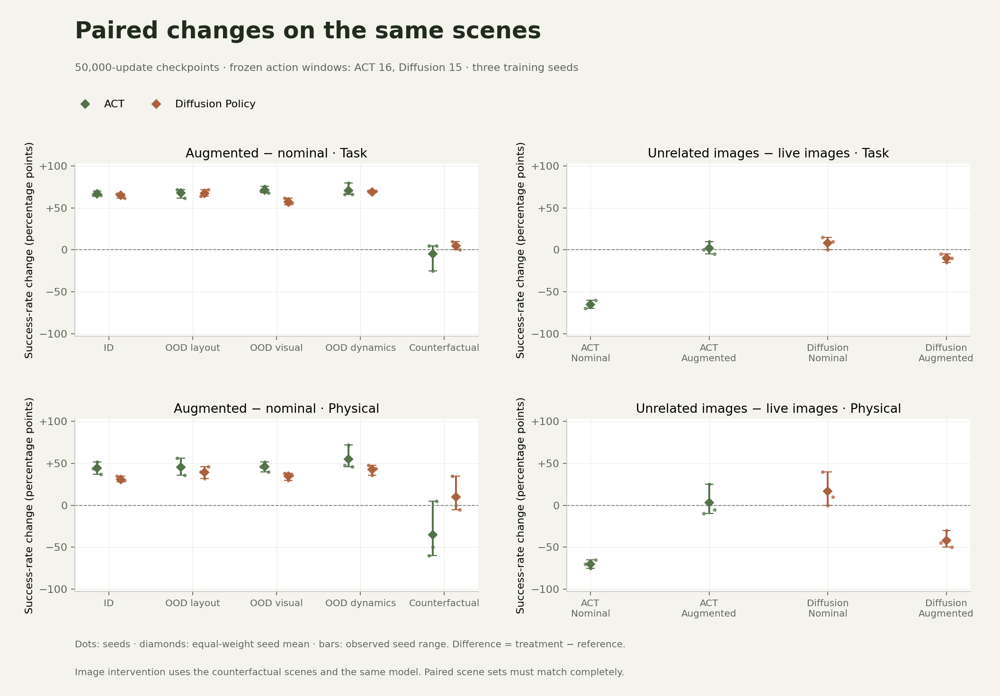
{kind=link}
The matched-proprioception suite also exposes an exception to the broad augmentation gain: ACT’s mean physical success falls from 70.0% under nominal training to 35.0% under augmented training, with augmented seed outcomes ranging from 10.0% to 70.0%. Diffusion improves from 65.0% to 75.0%. Holding the initial robot and tools fixed creates a different test from varying the whole workstation. Reporting both reveals a weakness that the ID average would conceal.
Each rollout has a nine-second simulated horizon. We report final block count, all-six task success, and a separate physical-success outcome that includes penetration, forbidden contact, warnings, and lifting. Every attempt contributes to the denominator. Wall-clock rendering and policy latency are measured separately from simulated control frequency.
08 / REFLECTION
What a physical intelligence prototype should expose.
Astra’s contribution is visible in the decisions that connect the artifacts. From the video, it extracted a receiving tool, a pushing tool, a support surface, and their relative arrangement. It turned those relations into collision geometry and reachable arm paths. It used a contact intervention to test whether pushing caused collection, then made the generator condition its paths on new layouts and preserve the failures. These are concrete steps from spatial reasoning to an executable physical experiment.
The learning stage required another kind of reasoning: a failed rollout did not immediately call for a larger model or more updates. A contradictory statistic led to a reproducible float32 reduction error. A stalled sweep led to a same-checkpoint execution-window comparison. The resulting repairs were judged by recorded contact, collection, penetration, and lift, as well as by numerical checks. Collection and physically valid completion remained separate because the diagnostic rollouts made that distinction necessary.
Three lessons carry forward. Represent the relations that make the task possible before varying its coordinates. Treat the complete simulation trace, including rejection, as part of a demonstration’s meaning. And test the controller as deployed: its observations, normalization, action queue, and physical effects belong to the same experiment. Validation selected the deployment settings. The completed independent test shows that generated data substantially improves success across varied workstations, while physical-validity gaps and the image intervention expose limits that the task-success average alone would hide.
This is the architectural direction behind a physical-intelligence prototype: an agent that can write a hypothesis about action, execute it, inspect where reality in the simulator disagrees, and revise the relevant part. Here that loop is exercised on one six-second source video, one bimanual cleaning task, a fixed-base robot, and modeled contact. Expanding it to new tasks and embodiments means carrying forward the same observable chain, with new physical experiments at each boundary.
Four fixed cases, including every failure.
These cases use the first registered ID scene and training seed 11, selected before inspecting outcomes. All four fail task completion and physical validity. Nominal Diffusion retains five blocks but misses the lift criterion; nominal ACT lifts the pan while collecting none. Both augmented policies retain one block, with different lift outcomes and contact violations. These cases illustrate failure modes; the complete test suite above determines the method comparison.
Each Blender presentation replays the actual recorded physical states from a nine-second rollout. Global, ego, and gripper cameras show the same motion. These presentation views are separate from the top and wrist RGB observations used by the policy.
| Policy | Blocks in pan | Final pan origin above table (mm) | Maximum global penetration (mm) | Maximum pan–block penetration (mm) |
|---|---|---|---|---|
| Nominal ACT | 0/6 | 45.628 | 1.885 | 0.191 |
| Augmented ACT | 1/6 | 7.924 | 6.056 | 6.056 |
| Nominal Diffusion | 5/6 | 19.488 | 2.080 | 1.608 |
| Augmented Diffusion | 1/6 | 56.543 | 1.888 | 1.592 |
Pan height is its final body origin relative to the table, not displacement from its initial position. The lift threshold is 30 mm; global and pan–block penetration limits are 1.5 mm. A block counts only when all eight corners satisfy the final cavity-inclusion test.
Inspect Nominal ACT · three camera views
Open this recorded rollout in Blender ↗ · Original metrics ↗
Inspect Augmented ACT · three camera views
Open this recorded rollout in Blender ↗ · Original metrics ↗
Inspect Nominal Diffusion · three camera views
Open this recorded rollout in Blender ↗ · Original metrics ↗
Inspect Augmented Diffusion · three camera views
Open this recorded rollout in Blender ↗ · Original metrics ↗
09 / OPEN ARTIFACTS
Open the scene.
Follow the evidence.
The reference scene, original trajectory, contact intervention, and browser-transfer audit are available below. The expanded learning release will include generation manifests, all attempted scene outcomes, policy configurations, checkpoints, evaluation records, and the scripts that produce the report’s figures.
Heavy simulation, rendering, and learning run on the remote server in an isolated project directory. The Mac handles lightweight inspection and editing. Exact package versions, source hashes, random seeds, renderer settings, and output hashes accompany the corresponding experiments.
Robot assets: MuJoCo Menagerie, Apache-2.0. Browser viewer: model-viewer 4.3.1, distributed with its license. Source video supplied by the author. Reference artifact manifest · Robot license